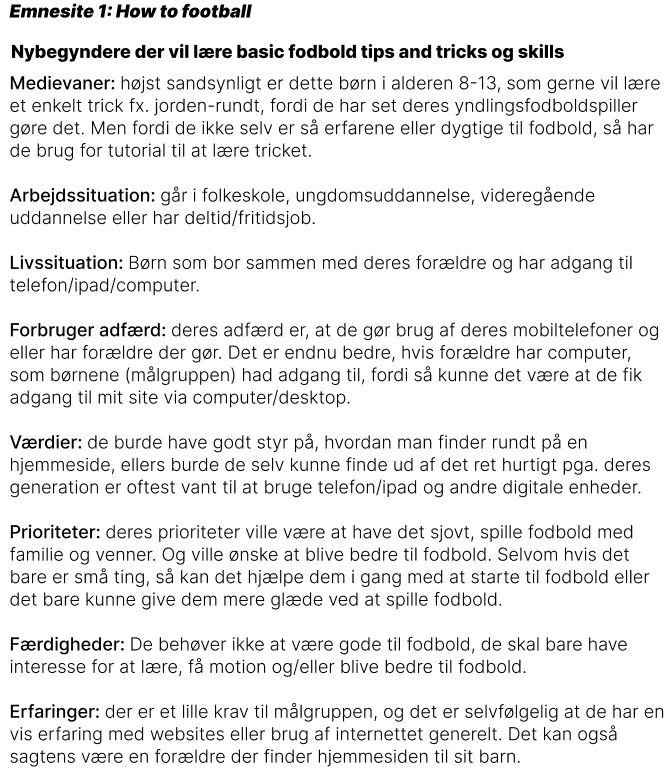
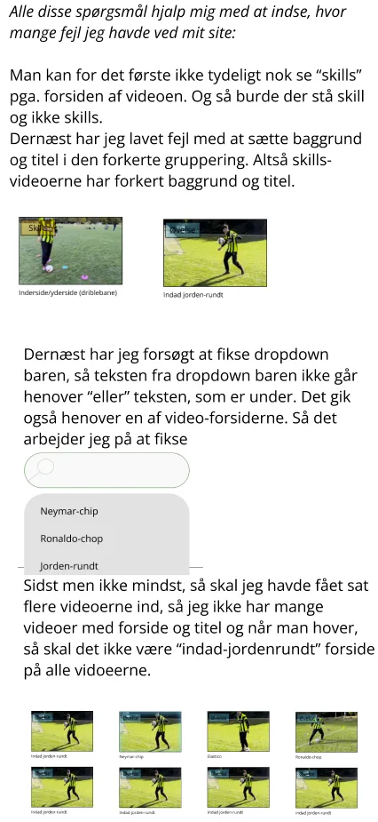

- Emnesite
- Research og idé
- Moodboard
- Bruger research
- Idéer til indhold
- Lightning Demos
- The four step sketch
- Design Sprint Decide
- Digital prototype
- Low Fidelity Wireframe
- High Fidelity Wireframe
- Low Fidelity Prototype
- Pilot Thinking out loud
- Stil og Tone
- Værdiord
- Moodboards
- Style tiles
- Likert-test
- Mixed Style tiles
- Likert-test 2
- High Fidelity Prototype
- 5-second test
- Thinking out loud HIFI Prototype
- Kodning
Tema 3 - Grundlæggende UX/UI
Dette tema handlede om at lave en hjemmside, hvor man selv vælger emnet, og hvad man skal kunne på siden. Det var meget udfordrende for mig kodemæssigt, da der for eksempel var der nogle design valg, som jeg gerne ville have på mit site, som jeg ikke kunne finde ud af at kode ind på sitet, fordi jeg var for ny til at kode og det var rigtig svært. Det gjorde at jeg ikke blev færdig med mit kodet site i dette tema. Jeg bevægede mig meget fageligt dog, netop medd hensyn til metoderne og faserne for designvalg, brugertest og alt andet. Jeg ville kunne gøre dette projekt meget nemmere, hvis jeg skulle gøre det igen. Jeg har nu styr på figma, bedre til at kode og forståelse for test og designkoventioner. Temaet gav mig nye digitale design evner og mere erfaring med HTML og CSS. Jeg ville også kunne forklare alle design/udviklingsfaser og metoder, som blev arbejdet med… ikke kun hvad det er, men også hvordan og hvorfor.
Emnesite
Link til sitetDette var den eneste opgave igennem hele temaet, men dette tema involverede også rigtig meget læring om de forskellige designfaser man går igennem for at udvikle hjemmesider på min uddannelse. For at fuldføre denne opgave skulle man følge en struktur for processen af udviklingen af sit emnesite. Al proces i designfasen (eksklusiv kodning) er dokumenteret med Figma. I løbet af denne opgave skulle jeg igennem følgende faser:
- Research og idé
- Digital prototype
- Stil og tone
- Kodning
Research og idé
Research fasen startede med, at man valgfrit skulle beslutte sig for et emne, som sitet skulle have. Jeg besluttede mig for at lave en lærende fodbold hjemmeside med videoer af mig, der demonstrerer, hvordan man kan blive bedre til fodbold på specifikke punkter eller bare lære specifikke skills med en fodbold. Da emnet var valgt skulle jeg Igennem noget idégenerering til at få bragt min idé til livs gennem følgende steps vist forneden.
Moodboard
Moodboards hjælper med at vække følelserne og det udtryk, som man gerne vil have sin idé giver. Jeg lavede mit moodboard med canva.com, som gav mig muligheden for at lave et pænt opstilled ramme med forskellige importerede billeder og forskellige farvede fonte, som hver i ser skal forme min idés udtryk.
Bruger research
Det krævede at jeg forstod, hvem min modtager målgruppe skulle være, derfor lavede jeg forskelligt indhold, som hjælper mig med at afgrænse min målgruppe. Det første er at skrive information om 1 eller flere brugertyper, så jeg derefter kan placere dem i en brugermatrix, som skal være tilpasset efter relevans for brugerne. Og sidst men ikke mindst er det en god idé at lave nogle user stories, som er meningen skulle forstille sig at være situationer, de forskellige brugertyper kunne få løst ved hjælp af min hjemmeside.
Idéer til indhold
På dette tidspunkt var jeg i stand til at beslutte mig for specifikke former for indhold/løsninger min hjemmeside skal have, fordi jeg nu var klar over hvem min målgruppe er og, hvad de søger. Så min idé var nemlig at have instruerende 1 minuts videoer, som går i gennem step by step løsninger til at blive bedre til fodbold.

Lightning Demos
Dette er en 2 step proces til at få idéer til elementer, som man gerne vil have på sin hjemmeside. Det første step er individuelt, hvor man leder efter elementer på apps og hjemmesider, som man godt selv kunne tænke sig at have på sin egen hjemmeside, med beskrivelse af, hvordan man gerne vil have det til at være på sin egen hjemmeside. I step 2 går man sammen med en gruppe andre studerende hvor at udveksle sine idéer imens, der er én person fra gruppen, som skitsere idéerne ned på papir.

The four step sketch
Herefter går man igennem en 4-trins øvelse, hvor formålet er at slutte af med en endelig sketch, som man kan bruge til at komme videre i research og idé fasen. Første step er at få sine noter i orden fra lightning demos. Trin 2 handler om at tegne 1-3 forskellige varianter af hver idé, så man har forskellige udseende at arbejde med, så man herefter kan vælge hvilken ville fungere bedst. Trin 3 er crazy 8s, som går ud på at kun bruge 8 minutter på at hurtigt skitsere 8 forskellige varianter en af sine idéer for at have mere at arbejde med, hvis nu man skulle være i tvivl. Derfor besluttede jeg mig bare for at gøre det med logoet/navnet på hjemmesiden, da jeg havde mange idéer i mit hoved på det tidspunkt. Efter disse steps er man klar til at bygge sin solution sketch, som er nummer 4 og sidste trin. Det går ud på at skitsere sin hjemmeside og tilføje sine idéer ud fra de tidligere øvelser for at danne udseendet af hjemmesiden.
Design Sprint Decide
Den sidste del af research og idé fasen er en afsluttende decide fase, som involvere, at man fælles i sit team fra hele sin afdeling/klasselokale hænger sin solution sketch op, så de andre studerende kan lave et heat map af skitsen, hvor man klistrer enden blå eller gule prikker på elementer/idéer man godt kan lide og så klistrer man post-it notes op og skriver sine tanker/ting man kunne gøre anderledes eller bare forklare hvad man kan lide. Dernæst skal man tage sit eget heat map/solution sketch og opsummere og tage noter om det relevante man fandt ud af. Dette er blandt andet og indse, hvad andre synes godt om, så man ved, hvad man skal beholde, og derudover også genkende, hvad man måske skulle lave om i ud fra andres konstruktive feedback.
Digital prototype
Når man havde været igennem alt research og idé så skulle man til at lave wireframes, som er en del af processen til at lave en digital prototype. Der er altså en korrekt rækkefølge af finde frem til sin endelige digitale prototype, og først skal man altså lave selve layoutet af sin hjemmeside før man tilføjer funktionaliteten eller nogen form for stilmæssige valg af farver og fonte.
Low Fidelity Wireframe
I en Lofi-wireframe har man kun selve layoutet/positionerne af elementerne og dummy-tekst og placeholder billeder, som erstatning for det færdige indhold. Man starter altså ud med at have en tegning med formatet af sin hjemmeside i sort og hvid med forskellige toner af sort/hvid for at kunne adskille elementerne fra hinanden.
High Fidelity Wireframe
Hernæst kan man tilføje det rigtige grund indhold såsom tekst og billeder, dog stadig uden farver, da man stadig ikke har lavet en grundig gennemgang af valg af stil og tone.
Low Fidelity Prototype
Dette er den tidlige repræsentation af hjemmesiden, som man kan teste, fordi man her gør Hifi-wireframen funktionel og klikbar, så knapperne er interaktive og man altså kan klikke sig igennem de forskellige sider på sin prototype.
Link til prototypenPilot Thinking out loud
Da man nu havde en tidlig version af sin prototype, så kan man altså teste dens funktionalitet ved en Thinking out loud test. Denne test kræver en testperson, som skal afprøve prototypen. Det første jeg skulle gøre for at forberede min test er, at lave nogle forskellige scenarier/opgaver, som jeg forestiller mig min testperson/bruger ville komme ud for og derfor ende med at opsøge min hjemmeside. Jeg udvælger en af de opgaver, jeg kommer op med og finder så en testperson, som er villig til at hjælpe mig med at afprøve prototypen. Testen går først ud på, at sørge for, at testpersonen er klar over, hvad de skal. Det gør jeg ved først at give den udvalgte opgave til testpersonen og dernæst klargøre, de skal tænke højt ved at foklare, hvad de ser, og hvad de tænker imens de gør det. Eksempelvis, hvis de er i tvivl om noget imens de forsøger at løse opgaven og ikke ved, hvad de skal trykke på, så er målet, at de forklarer, hvad forvirrer dem, så dette netop kan forbedres efter testen. Hvis de sidder fast og ikke ved, hvad de skal, så er mit mål at guide dem i gang igen uden at være for direkte med svaret og uden at være upassende overfor testpersonen. Efter testpersonen har forsøgt sig igennem hjemmesiden og den stillede opgave, så kan jeg opsummere på testpersonen relevante observationer og meninger.
Stil og Tone
Når man så er klar til at rykke videre, så begynder Stil og Tone fasen, hvor man beslutter sig for det endelige design til sin hjemmeside. Dette hentyder til udtrykket, som brugeren skal få fra hjemmesiden, og det omhandler, tekst font, farver og potentielle illustrationer. I sidste ende er det med til at danne den endelige digitale prototype. Det følgende nævnte er indholdet for Stil og Tone fasen
Værdiord
Til at starte Stil og tone fasen, så skal man brainstorm værdiord, som skal man gerne vil have hjemmesidens design udtrykker. Disse værdiord kommer i form af tilægsord, og det kan være en god idé at bruge sit Moodboard fra research fasen til at låse op for ordene. Når man forhåbentlig er kommet frem til masse forskellige gode værdiord, så skal man vælge 3 værdiord, man synes bedst passer til sin forestilling om hjemmesiden udseende.


Moodboards
Når man har besluttet sig for 3 gode værdiord, skal man så lave et moodboard ud fra hver af disse værdiord. Lidt ligesom i begyndelsen af research fasen, men nu kun ud fra 1 ord hver især. Jeg havde en god idé om, hvordan mine farver og mit udtryk skulle være med denne hjemmeside, så jeg brugte mit tidlige moodboard og kun lavede 2 mere, da jeg vidste at det ene af de 3 ord skulle være sporty.
Så mine 3 ord var sporty, lærerigt og motiverende. Jeg havde mange gode muligheder for værdiord, men jeg syntes disse 3 bedst repræsenterede formålet med hjemmesiden.
Jeg valgte sporty, fordi alle, som besøger hjemmesiden, enten er sporty i forvejen eller ser frem til eller overvejer at være sporty.
Jeg valgte lærerigt, fordi det er en af de aspekter ved hjemmesiden, som jeg egentlig gerne vil forsøge, netop at være til gavn for andre, som gerne vil lære noget nyt eller har svært ved at blive bedre til noget af sig selv.

Jeg valgte motiverende, fordi det uanset hvad, krævede at være motiveret enten før man besøger hjemmesider, eller at man bliver motiveret, når man finder frem til hjemmesiden. Dette er fordi, man lærer bedst, når man er motiveret, og hvis det ikke interesserer brugeren at spille fodbold eller lærer noget nyt indenfor fodbold, så har de ikke brug for hjemmesiden indhold alligevel.
Style tiles
Efter moodboards er lavet, så kan man skabe et styletile af de forskellige bedst repræsenterende farver og fonte til hver af de 3 moodboards. Derfor skal man gerne komme frem til 3 style tiles, som hver hænger sammen med en af de 3 moodboards.


Likert-test
Man skal her bruge sine style tiles og teste, hvor godt man har fanget udtrykket af hver af disse værdiord ved brug af Likert-test, som er en brugerundersøgelse, der er kvantitativ og går ud på, at folk besvarer et spørgeskema ud fra hvor enige de er med, hvor godt hver af disse style tiles passer til værdiordene. Som forberedelse til en Likert-test, så tegner man kryds i hver skala fra 1-5 med, hvor man forventer den gennemsnitlige besvarelse kommer til at være for hver af svarmulighederne til hvert styletile. Herefter bruger man folks svar til at sammenligne med ens egne forventninger, og ud fra dette, så kan man lave 2 nye styletiles, hvor man vurderer, hvilke ting fra hvert style tile er bedst.
Mixed Style tiles
De 2 nye styletiles er hver et forsøg på at mixe det bedste fra hvert style tile på hver sin måde.
Likert-test 2
Man kan hermed lave en sidste Likert-test, som skal være den afgørende faktor til at beslutte det endelige design for hjemmesiden. Ud fra folks besvarelser på det nye spørgskema, kan man konkludere det bedste design og begynde til den endelige digitale prototype.
Så er man færdig med stil og tone fasen og man kan dermed færdiggøre fasen for den digitale prototype.
High Fidelity Prototypen
Det er nu hvor man samler alt tidligere arbejder og skaber en prototyper, som skal menes at være identisk til sin hjemmeside. Man skal derfor forsøge at gøre den så fuldstændig funktionel som muligt og samtidig tilføje den stil, man er kommet frem til med værdiord, moodboards, style tiles og likert-tests. Man laver denne Hifi-prototype ved at skabe components i figma, så der er forskellige stages af en knap, når den er idle, når man hover, når man trykker og hvis den ikke dur. Det er måden at gøre knapper mere interaktive og give noget visuelt feedback på knappe-trykket. Dette kan gøres med alle interaktive elementer, så netop knapper, animationer og en søgebar, som jeg havde på mit eget.
Link til prototype5-second test
Når man havde lavet sin high fidelity prototype, så kunne man bruge et billede af den til at lave en 5 second test, som folk kunne lave for at hjælpe med at besvare, om formålet, interaktive elementer og målgruppen er tydeligt. Da testen går ud på at deltagerne bliver vist mit design i kun 5 sekunder og skal observere så meget som mulgt, og hvis de så kan give nogle gode svar på kun de 5 sekunder, så er mit design godt, og jeg behøver ikke at lave om i det.
Thinking out loud Hifi-prototype
Sidst i designfasen skal man afslutte med at lave en thinking out loud test med den endelige digitale prototype for at se, om den er funktionelt tilpas, da der kan være ting, som man selv har overset. Man bruger en af de opgaver, som man brugte i pilot testen, men måske lav om i opgaven lidt, da der nu er mere at gøre og mere for testpersonen at observere. Personligt for mig var der en del ting, som jeg ikke selv havde indset, før testpersonen pegede det ind i fokus for mig, og jeg kunne dermed efterfølgende opdatere min Hifi-prototype og være helt klart til at kode hjemmesiden.
Kodning
For mig var der en helt del komplikationer med kodedelen, og derfor blev jeg aldrig helt færdig med det. Det eneste der var funktionelt var, at jeg opfyldte kravene om at have minimum 3 sider, som man kunne navigere rundt i, og så kunne man bruge 1 af videoerne på sitet til at blive ført hen til min youtube video, sm viser et eksempel på en fodbold dribbleøvelse. Alt i alt var mit kodet site kun 30 procent færdigt, desværre.